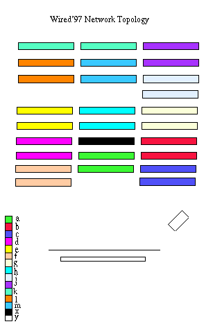
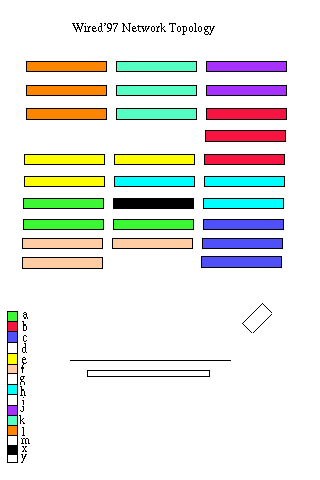

De opstelling zoals ze nu getekend is is gebaseerd op de situatie van vorig jaar. 1 segment per twee tafels is wel een zeer grote overschot aan ipnr's maar anders worden de kabels veel te lang (vorig jaar lag er bv een kabel van segment b naar segment j om via k door te gaan tot l) Daarom liever een grotere spreiding van de segmenten.
Gelieve zo veel mogelijke opmerkingen en aanvullingen door te mailen
Backbone van de ISDN lijnen naar Network Organisation en Projection
En naar de achterkant van de hal.
Er staat nog niet vast of die Bacbone 100Mb, Wavelan , Token
Ring of 10Mb wordt.
In de Network organisation staan 3 machines met 4 netwerkkaarten die
allen op de backbone zitten en de segmenten
Machine X
Machine Y
Machine Z
Achteraan zitten we nog met 8 tafels die we in 4 segmeenten verdeeld kunnen worden.
Machine M
Machine N
